DIRTY Spherical Galactic Environment Calculations
The DIRTY model (
Gordon et al. (2001),
Misselt et al. (2001),
Law et al. (2018),
)
was used to investigate the impact of non-homogeneous dust distributions
on the extinguished and scatter light from systems of stars and dust. The DIRTY model was the
first to investigate such effects in full 3D.
Witt & Gordon (1996)
investigated the simple case of a star surrounded by a sphere of dust, where the dust was
distributed homogeneously or with clumps with varying sizes, filling factors, and clump/inter-clump
density ratios.
Witt & Gordon (2000)
used Spherical Galactic Environments (SGEs) to investigate how clumpy dust impacted the
wavelength dependence of attenuation on regions of galaxies. The SGEs were introduced
by Witt, Thronson, and Capuano (1992)
where only smooth (non-clumpy) dust distributions were studied.
Original Tables
Tables 2-4 of Witt & Gordon (2000).
| Table 2 | Table 3 | Table 4 |
|---|---|---|
| Dusty | Shell | Cloudy |
| ASCII | ASCII | ASCII |
| 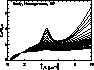
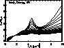 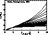 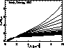 |
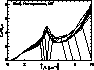
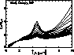 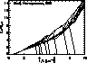 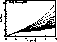 |
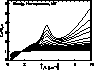
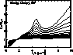 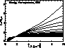 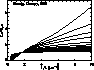 |
{kind=link}
{kind=link}
{kind=link}
{kind=link}
{kind=link}
{kind=link}
{kind=link}
{kind=link}
{kind=link}
{kind=link}
{kind=link}
{kind=link}
Full Original Data
Full original data for Witt & Gordon (2000) with an expanded set of dust density ratios. The format of these files is different than those in Tables 2-4 given above.
| SGE, dust-type | k2/k1 (density ratio) | ||||||
|---|---|---|---|---|---|---|---|
| SHELL, MW | 1.000 (homogeneous) | 0.500 | 0.100 | 0.050 | 0.010 (clumpy) | 0.005 | 0.001 |
| SHELL, SMC | 1.000 (homogeneous) | 0.500 | 0.100 | 0.050 | 0.010 (clumpy) | 0.005 | 0.001 |
| DUSTY, MW | 1.000 (homogeneous) | 0.500 | 0.100 | 0.050 | 0.010 (clumpy) | 0.005 | 0.001 |
| DUSTY, SMC | 1.000 (homogeneous) | 0.500 | 0.100 | 0.050 | 0.010 (clumpy) | 0.005 | 0.001 |
| CLOUDY, MW | 1.000 (homogeneous) | 0.500 | 0.100 | 0.050 | 0.010 (clumpy) | 0.005 | 0.001 |
| CLOUDY, SMC | 1.000 (homogeneous) | 0.500 | 0.100 | 0.050 | 0.010 (clumpy) | 0.005 | 0.001 |
Expansion to LMC2 type dust and more SHELL optical depths
Expansion to include LMC2 type dust and a larger range of optical depths for the SHELL SGE. The format of these files is different than those in Tables 2-4 given above.
| SGE, dust-type | k2/k1 (density ratio) | ||||||
|---|---|---|---|---|---|---|---|
| SHELL, LMC2 | 1.000 (homogeneous) | 0.010 (clumpy) | |||||
| SHELL, SMC | 1.000 (homogeneous) | 0.010 (clumpy) | |||||
| CLOUDY, LMC2 | 1.000 (homogeneous) | 0.500 | 0.100 | 0.050 | 0.010 (clumpy) | 0.005 | 0.001 |
Weingartner & Draine (2001) dust grain properties
These model runs use the Weingartner & Draine 2001, ApJ, 548, 296 dust grain models for MW, LMC2, and SMC dust. The dust grain model scattering parameters were downloaded from Bruce Draine's homepage. They also cover a wider range of wavelengths (0.05 - 3 microns) than the Witt & Gordon (1996) models which used empirically determined dust scattering properties.
The inputs are significantly different than those used in the original tables and are probably not as valid as those used in that paper. Dust grain models do not use the known dust scattering properties as constraints and, thus, do not do a good job reproducing them. It is not clear which dust grain model inputs should be used, especially in the case of SMC or LMC type dust or at wavelengths where the empirical work has not been done. For the MW runs, the empirical dust grain inputs (original calculations) are the recommended inputs. More work is obviously needed on both empirically determining dust grain scattering inputs in other galaxies as well as improving the dust grain models to include the empirical work on dust scattering properties.
| SGE, dust-type | k2/k1 (density ratio) | ||||||
|---|---|---|---|---|---|---|---|
| SHELL, MW | 1.000 (homogeneous) | 0.500 | 0.100 | 0.050 | 0.010 (clumpy) | 0.005 | 0.001 |
| SHELL, LMC2 | 1.000 (homogeneous) | 0.500 | 0.100 | 0.050 | 0.010 (clumpy) | 0.005 | 0.001 |
| SHELL, SMC | 1.000 (homogeneous) | 0.500 | 0.100 | 0.050 | 0.010 (clumpy) | 0.005 | 0.001 |
| DUSTY, MW | 1.000 (homogeneous) | 0.500 | 0.100 | 0.050 | 0.010 (clumpy) | 0.005 | 0.001 |
| DUSTY, LMC2 | 1.000 (homogeneous) | 0.500 | 0.100 | 0.050 | 0.010 (clumpy) | 0.005 | 0.001 |
| DUSTY, SMC | 1.000 (homogeneous) | 0.500 | 0.100 | 0.050 | 0.010 (clumpy) | 0.005 | 0.001 |
Clayton et al. (2003) dust grain properties
These model runs use the Clayton et al. (2003) dust grain models for MW, LMC2, and SMC dust. They also cover a wider range of wavelengths (0.08 - 1000 microns) than the Witt & Gordon (2000) models which used empirically determined dust scattering properties.
The inputs are significantly different than those used in the original tables and are probably not as valid as those used in that paper. Dust grain models do not use the known dust scattering properties as constraints and, thus, do not do a good job reproducing them. It is not clear which dust grain model inputs should be used, especially in the case of SMC or LMC type dust or at wavelengths where the empirical work has not been done. For the MW runs, the empirical dust grain inputs (original calculations) are the recommended inputs. More work is obviously needed on both empirically determining dust grain scattering inputs in other galaxies as well as improving the dust grain models to include the empirical work on dust scattering properties.
| geometry, dust-type | k2/k1 (density ratio) | ||||||
|---|---|---|---|---|---|---|---|
| SHELL, MW | 1.000 (homogeneous) | 0.500 | 0.100 | 0.050 | 0.010 (clumpy) | 0.005 | 0.001 |
| SHELL, LMC2 | 1.000 (homogeneous) | 0.500 | 0.100 | 0.050 | 0.010 (clumpy) | 0.005 | 0.001 |
| SHELL, SMC | 1.000 (homogeneous) | 0.500 | 0.100 | 0.050 | 0.010 (clumpy) | 0.005 | 0.001 |
| DUSTY, MW | 1.000 (homogeneous) | 0.500 | 0.100 | 0.050 | 0.010 (clumpy) | 0.005 | 0.001 |
| DUSTY, LMC2 | 1.000 (homogeneous) | 0.500 | 0.100 | 0.050 | 0.010 (clumpy) | 0.005 | 0.001 |
| DUSTY, SMC | 1.000 (homogeneous) | 0.500 | 0.100 | 0.050 | 0.010 (clumpy) | 0.005 | 0.001 |
| CLOUDY, MW | 1.000 (homogeneous) | 0.500 | 0.100 | 0.050 | 0.010 (clumpy) | 0.005 | 0.001 |
| CLOUDY, LMC2 | 1.000 (homogeneous) | 0.500 | 0.100 | 0.050 | 0.010 (clumpy) | 0.005 | 0.001 |
| CLOUDY, SMC | 1.000 (homogeneous) | 0.500 | 0.100 | 0.050 | 0.010 (clumpy) | 0.005 | 0.001 |